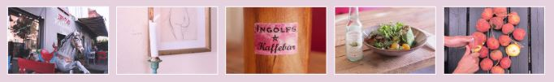
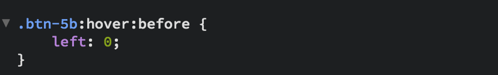

På hjemmesiden har vi flere steder brugt en stribe billeder fra caféen til at vise stemningen. Her har vi bl.a. brugt mediequeries til at definere hvordan billederne skal vises på forskellige størrelser skærme:
På skærme over 1200px står de 5 billeder i én række med en bredde på 1200px.
På skærme mindre end 1199px bliver bredden på billede-boksen begrænset til 800px, så billederne står i to rækker på 3 og 2 billeder.
På skærme under 500px er flex-basis sat til 100px for at sørge for, at siden ikke wrapper for tidligt og sender billederne under hinanden. Dvs. at den viser billederne o to rækker af to, og med det sidste billede sat til 100% fylder det nederste altså hele bredden.
Derudover er hvert billede i en .image-div med flex-basis og alle disse div'er er i en .image-wrapper-div med flex. Marginerne ændres også efter skærmstørrelse.

Vores lighthouse-analyse af det nye website var overvejende positiv. Derfor har vi simpelthen kun fundet en enkelt ting, vi kunne rette. Resultaterne af analysen forblev det samme.
Vores billeder er fra start rimeligt optimerede, bortset fra vores splashbillede, som var PNG. Dette har vi lavet om til JPG og sparet en hel del plads.
Noget cafe værk, det ligner noget cafe, evt noget jazz klub, noget med musik, kaffe, kage "det kan jeg ikke huske, eller er det ingolfskaffebar?"
Hvad er det mest i øjenfaldende?
Lyserød, bygning, vinduer, overskrift helt oppe i venstre hjørne, alt efter det er et blur, farverne, billederne, layoutet
Det mest iøjenfaldende var vores splash billede, hvilket er naturligt, det da hovedsageligt er det man kan se når man kommer ind på sitet.
Kreativt, playfull, moderne, flot
Til at skabe vores Masonry-gallery har vi lånt HTML og CSS kode fra det linkede website i opgaveformuleringen (https://speckyboy.com/snippets-masonry-grid-layouts/). Vi valgte at skabe et Masonry-gallery, hvor vores billeder fremstår som ”post-it” lapper, hvilket vi syntes var n sjov og kreativ måde at vise vores original billeder.
Oprettelse af "find os"-knapper på forsiden
Til vores knapper har vi fået inspiration fra denne hjemmeside der havde et udvalg af knapper:
https://tympanus.net/codrops/2013/06/13/creative-button-styles/
Her kunne man downloade deres html og css til følgende og udplukke hvad man ville bruge.
Vi valgte at bruge den knap der hed button 5. Når man hover over denne knap forsvinder skriften ud til højre side og fra venstre side kommer der et ikon ind. Her kunne man selv være kreativ med ikon valg og hvad der skulle stå.
Siden vores klient kun bruger facebook og instagram, valgte vi at lave knapper der linkede til disse platforme, samt et link til google maps med deres adresse.
Vi kopierede det html som vi ville bruge fra deres ind i vores eget, og rettede lidt til.
Vi rettede navnene på de forskellige knapper og derefter rettede vi farver og størrelse.
For at få ikonerne vist downloadede vi en font der generede disse ikoner fra denne hjemmeside: https://icomoon.io/app/#/select .
Her fik vi en reference kode til hvert ikon, som vi kunne referere til inde i vores css.
Process fra start til slut:
Først fjernede vi alt hvad vi ikke skulle bruge fra deres html så vi nemmere kunne få et overblik over hvilke koder vi præcis skulle bruge. Det samme gjaldt for css’en.
Da vi havde cuttet alt det overflødige fra tog vi de resterende koder og satte ind i henholdsvis i vores html og vores css.
Derefter gik vi ind på IcoMoon og downloade fonten vi skulle bruge samt udvalgte de ikoner vi gerne ville have på vores hjemmeside. Derfra fik vi nogle koder vi senere kunne referere til.
Vi satte @font-face ind øverst i vores css hvor vi refererede til den mappe vores font ligger i.
Herefter rettede vi udseendet på knapperne til i vores css og refererede til de bestemte ikoner.

Burger-menuen har vi selv kodet. Til grafik har vi dog brugt en SVG fra icomoon.io, hvor vi har kopieret path-koden ind i HTML'en.

{kind=link}
{kind=link}
{kind=link}
{kind=link}